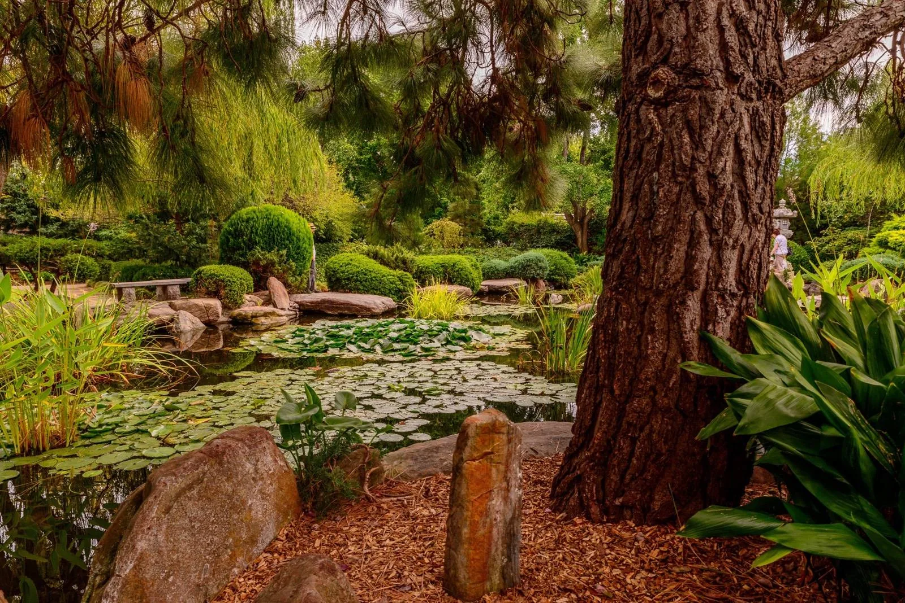
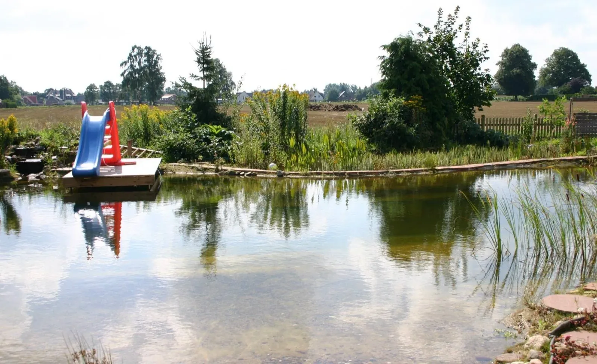

★★★★★
“Brad Porter and his crew are great! Before hiring them I had 3 different quotes and I am so glad I went with him. Military friendly, Highly recommend!!!”JeanCarlo Rivera

Home / Services / Natural Pools & Ponds
Natural pools, swim ponds and water features
Swim in living water. Terramorph has designed and built natural swimming pools, swim ponds, wildlife ponds and pondless waterfalls that use plants and gravel, not chlorine, to keep water clear, designed for Ohio winters and Northwest Ohio clay.
4.9★★★★★220+ Google reviewsA garden wildlife pond with water lilies and planted margins. Reference photo, not a Terramorph project. Photo: Mshort1803, CC BY 3.0
Great work at a fair price. They did what they said they were going to do, when they said they would do it.Richard Hansen
A lot of companies tell you what they are going to do. This company far exceeded their word.jon mercurio
Attention to detail was 2nd to none!Adam Raider
They did an excellent job and completed the same day. I would highly recommend them.Teresa Thompson
10/10 Company, the boys made my house look great. Customer Service is great, best deal on the market.Alejandro Urrea
Great work very accommodating and extremely professional will definitely have them do all my future work.Pete Detgen
Great, professional group of guys!Josh Johnson
They did a fantastic job for me. I will recommend them to colleagues.Dominic Urquiola
Fast and reliable. Ty did excellent work and very reasonable cost. I would not hesitate to suggest him to others.Larry Calcamuggio
Amazing service every time and prompt to all appointments.CJ Miller
Sound familiar?
What you get

01Living water
A natural swimming pool has two parts: an open swimming zone and a shallow regeneration zone planted with water plants. Water circulates through the plants and gravel, where settling, microbes, plant roots and a natural biofilm clean it. No chlorine. The result looks like a garden pond you can swim in.
Natural pools aren't new. They're well established in Europe, and the design standard most builders follow is the German/Austrian FLL guideline. North America's first public natural swimming pool opened in Minneapolis in 2015, cleaned by about 7,000 aquatic plants rooted in gravel.
What we build
From a full natural swimming pool to a small recirculating waterfall, each option fits a different yard and a different family.
 03
03How it works
How big the planted zone needs to be depends on the design. In simpler, plant-driven pools it is often around half the surface area. Designs with more filtration equipment can use a smaller planted zone.
Built for here
Northwest Ohio ground and winters shape every natural pool and pond we build.
Side by side
| Natural pool | Chlorine pool | |
|---|---|---|
| Water treatment | Plants, gravel, microbes; no chlorine | Chlorine or salt system |
| Look | Blends into the landscape, planted edges | Hard edge, blue finish |
| Wildlife | Dragonflies, frogs, birds | Kept out |
| Upkeep | Skimming, plant care, regular water testing | Chemical balancing, filter care |
| Winter | Freezes and restarts naturally in spring | Closed and covered |
Chlorine-free doesn't mean test-free. A natural pool is a living system, and owners monitor it. The Minneapolis public pool is vacuumed daily and tested for bacteria up to three times a week. A home pool needs far less, but it still needs regular care.
Cost
We don't publish a price range because every natural pool is custom. Cost depends on size, the split between swim and regeneration zones, excavation and soil conditions, liner and edging materials (stone, decking, beach entry), pumps and skimmers, and how much planting you want. We give a free estimate and a clear scope. See financing for larger projects.
Conversions
Some chlorine pools can be converted to natural pools by adding a regeneration zone and changing the filtration. Whether it makes sense depends on the pool's shape, condition and the space around it. We'll assess yours honestly.
Safety and permits
Ohio's public-pool rules don't apply to private home pools, and the state residential code leaves pool fences and barriers to each city or township. So the rules depend on where you live. We check your local zoning, fence and permit requirements and build to them. Many Ohio cities require a barrier at least 4 feet high around pools deeper than 24 inches.
Maintenance
Expect skimming leaves, trimming and thinning plants, checking the pump, regular water testing, and spring start-up and fall shutdown. We offer seasonal care plans so the system stays balanced.
Where we work
Natural swimming pools, swim ponds, wildlife ponds and water features across Perrysburg, Toledo, Maumee, Sylvania, Waterville, Whitehouse, Holland, Monclova, Rossford, Oregon, Bowling Green and the rest of Wood and Lucas County. Free estimates: 419-873-6801. Part of a bigger plan? See permaculture design and native habitat. Decks, stone edges and paths come from the same crew: paver patios and hardscapes.
How we work
Homeowners need to know what happens next: Terramorph reviews the property, talks through the goal, explains practical options, and gives a clear estimate before work begins.
City, goal, frustration, timeline, range, and photos captured quickly.
Grade, water flow, access, soil, sun, materials, and maintenance expectations.
Clear options that connect budget to property improvement and long-term durability.
Professional install, cleanup, walkthrough, and follow-up.
Reviews
“Brad Porter and his crew are great! Before hiring them I had 3 different quotes and I am so glad I went with him. Military friendly, Highly recommend!!!”JeanCarlo Rivera
“I am so impressed with Ty and Terramorph. I called on a Monday and they did the landscaping on Friday. It looks fantastic. A great group of hard working young men. Would recommend to everyone.”Barb Flowers
“We are absolutely thrilled with the work Brad and his team completed! They completely redesigned our flower beds, providing us with a potential layout drawing, guiding us in selecting the right flowers, and executing everything perfectly. Besides the excellent craftsmanship, Brad and his team are genuinely kind and considerate.”Kate Vallerand
Questions homeowners ask
Still wondering about something? Call 419-873-6801, 7 a.m. to 8 p.m.
Every natural pool is custom, so cost depends on size, the swim-to-plant-zone split, excavation and soil, liner and edging, pumps and planting. Terramorph gives a free estimate and a clear scope for your site.
Water moves between a swimming zone and a shallow planted regeneration zone. Settling, microbes in the gravel, plant roots and a natural biofilm clean the water, so no chlorine is used. Many designs use a small pump to keep water circulating through the plants.
A well-designed and well-maintained natural pool has clear, clean water, but it's a living system, so it needs regular water testing and care. Chlorine-free doesn't mean maintenance-free.
It freezes over like any pond. Plants go dormant, pumps are winterized or kept running depending on the design, and the pool comes back to life in spring.
Mosquitoes need still water to breed, and their larvae can't develop in moving water. Circulation, waterfalls and native fish that eat larvae keep mosquitoes down.
It needs room for both the swimming zone and the planted regeneration zone. In plant-driven designs the planted zone is often around half the surface area, while designs with more filtration equipment can be more compact. We size it to your yard and how you'll use it.
Skimming leaves, trimming plants, checking the pump, regular water testing, and spring start-up and fall shutdown. We offer seasonal care plans.
Sometimes. It depends on the pool's shape, condition and the space around it for a regeneration zone. We'll assess it and tell you honestly whether conversion or a new build makes more sense.
A natural pool has a defined swimming zone and a planted filter zone. A swim pond is larger and more pond-like, built for both swimming and wildlife. A wildlife pond is built for frogs, birds and insects, not for swimming.
You get the sound and look of moving water without an open pond, since the water recirculates from a hidden underground basin. It takes less space and is a good fit for homes with young children.
It depends on your city or township, because Ohio leaves pool barrier rules to local codes. Terramorph checks your local zoning, fence and permit requirements before we build.
Terramorph at a glance
Terramorph LLC is a landscape design and build company based in Perrysburg, Ohio, founded by brothers Ty and Trent Lincoln. We handle natural swimming pools and ponds along with patios, drainage, landscape beds, lighting, lawn care, cleanups, and snow removal for homes and businesses across Wood and Lucas County. 4.9 stars from more than 220 Google reviews, BBB accredited, and estimates are free.
Keep reading
Project savings
The bigger the project, the more you save. Mention your code when you request your quote or approve your estimate.
Request My Quote| Your project | You save | Use code |
|---|---|---|
| $10,000 or more | 10% | Y2H1N |
| $8,000 or more | 8% | 7U5C1 |
| $6,000 or more | 6% | 8B2M3 |
| $5,000 or more | 5% | 0O6B2 |
Applies to all Terramorph services. One code per project, based on the project total before tax. Mention the code when you request your quote or before you approve your estimate. Can't be combined with other offers or applied to work already invoiced.

Free estimate
Free estimate
Send project details through the quote form, or call directly for urgent service questions and scheduling.
Call now or jump straight to the quote request form.